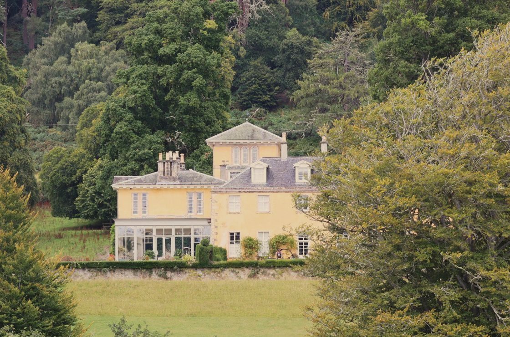
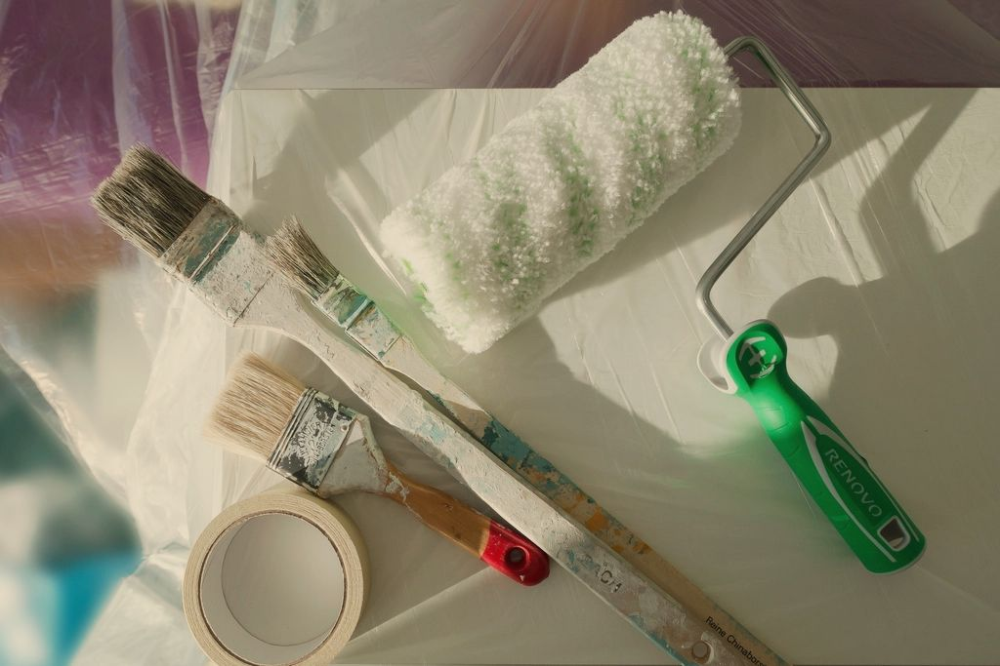
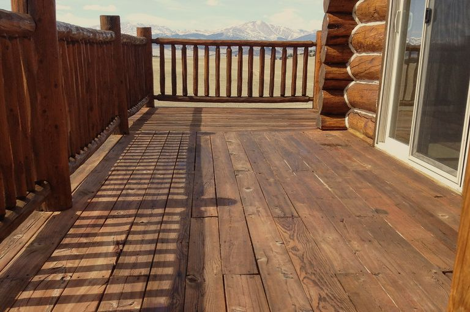
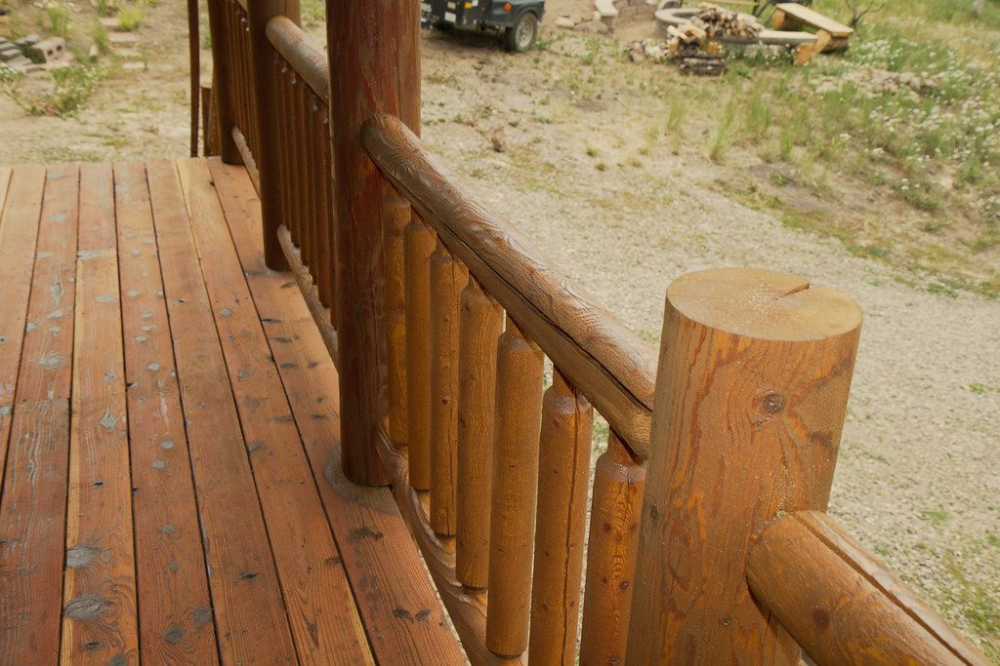
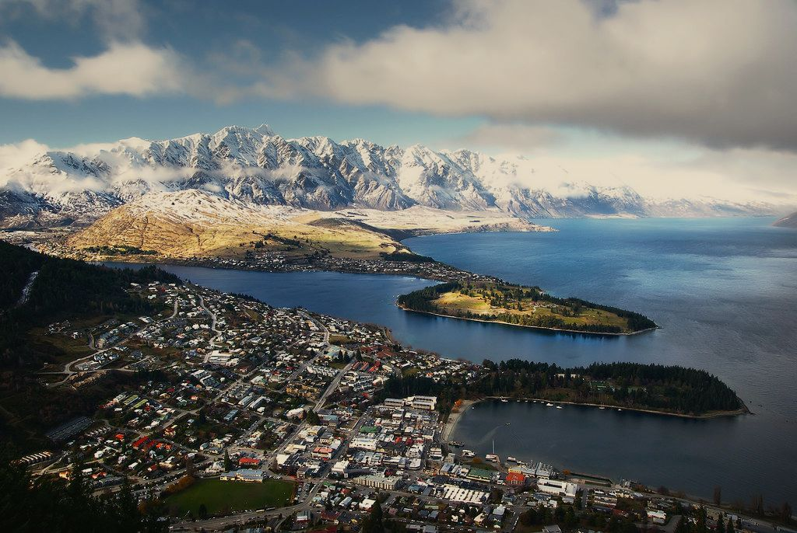

Painters · Queenstown and the Wakatipu · since 2011
Paint that stands up to an alpine winter.
Jono and a crew of four repaint homes, baches and decks from Arthurs Point to Jack's Point. Every exterior is washed, sanded and primed properly first, because UV and frost up here find every shortcut.

What we paint
Houses, baches and holiday rentals across the basin. Inside in the cold months, outside when the weather lets us.
-
Exterior house painting
Weatherboards, soffits, joinery and fascias. Washed, sanded, spot-primed and two top coats.
October to April
-
Interior painting
Walls, ceilings, trim and doors. Furniture moved and covered, rooms handed back each night.
All year
-
Roof painting
Corrugated iron and long-run roofs: water blasted, rust treated, primed and coated.
Dry, settled weeks
-
Wallpapering
Feature walls and full rooms, old paper stripped and walls lined before hanging.
Pattern matched
-
Decks and stains
Decks, fences and cedar cladding cleaned back and oiled or stained so the timber lasts.
Re-oil every 1 to 2 years
-
Plaster repairs
Cracks, dents and old fixings filled and sanded flat, so the new paint doesn't show them.
Before any interior job
The painting year in the Wakatipu
Paint needs warmth to cure and dry days to go on. We book outside work into the long-light months and move indoors when the frosts come.
- Jun – Aug
Inside work
Interiors, wallpaper and plaster while it snows on the Remarkables.
- September
Quotes
Walk-arounds and colour samples for the summer list.
- Oct – Nov
Prep and roofs
Washing, sanding, rust treatment and roofs in the first settled weeks.
- Dec – Feb
Long light
Full exteriors, starting at first light, off the sunny walls by midday.
- March
Decks
Oil and stain after the summer crowds, before the leaves drop.
- April – May
Last coats
Finishing outside before the first frost, then back indoors.
What goes into an exterior
A typical three-bedroom weatherboard house in Fernhill. We quote every house after walking round it.

A weatherboard repaint
- Prep
- Wash, sand, fill, spot-prime
- Top coats
- Two, acrylic
- Crew on site
- Three painters
- Time
- 8 to 10 working days
- Workmanship guarantee
- Five years
Recent jobs



What clients say
out of 5, from 38 Google reviews
-
“Jono's crew spent three days just on prep before a drop of paint went on. Two winters later the north wall still looks like the day they finished.”
FionaFernhill· Exterior repaint
-
“They did our rental between guests in June. Ceilings, walls and a wallpapered feature wall, all done in a week and not a drip on the carpet.”
HamishArrowtown· Interior and wallpaper
-
“Our deck was grey and splitting. They sanded it right back and oiled it. Neighbours have asked who did it.”
MereLake Hayes· Deck stain
Where we work
The whole Wakatipu basin from our yard in Frankton. Wānaka and Glenorchy for bigger jobs, by arrangement.
- Queenstown and Fernhill10 min
- Frankton and Kelvin HeightsHome base
- Arthurs Point15 min
- Lake Hayes and Shotover Country10 min
- Arrowtown20 min
- Jack's Point and Hanley's Farm15 min
- Glenorchy, WānakaBy arrangement
Holiday homes are fine with nobody home. Leave us a key or a code and we'll send photos at the end of each day.
Get a quote
Call or text Jono. A couple of photos of the house and the address is enough for him to come and walk round it.
- Mon–Fri
- 7:30 am – 5:00 pm
- Saturday
- Quotes only, mornings
- Quote back
- Within 3 working days